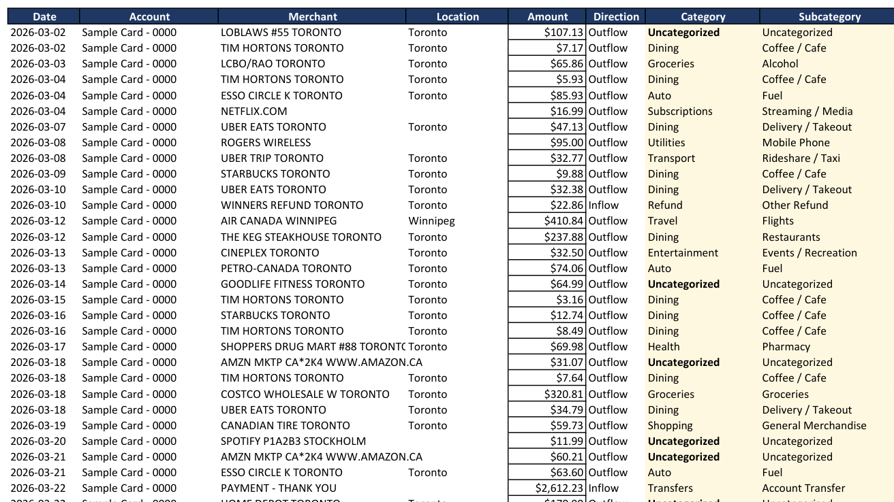
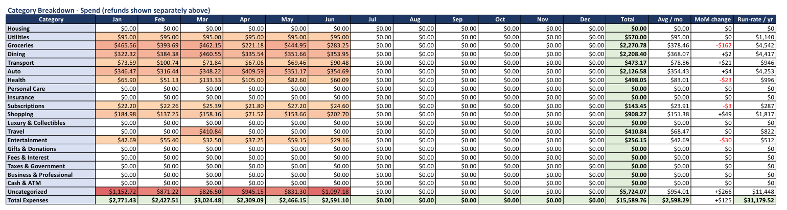

A cash flow reporting system built for a private client, driven by bank statement PDFs. Nothing is guessed: statements must reconcile, uncertain transactions go to a review queue, and an auditor agent has to clear the month before a summary is drafted.
Pythonpdfplumber for statement parsingXlsxWriter for the workbookYAML and CSV configurationClaude sub-agents for month-end review
4,250lines of Python in the pipeline, approximately
297merchant classification rules
24categories, with 85 subcategories
5review agents in the month-end run
The problem
The client's accounts ran across credit cards, chequing and a loan facility, with statements arriving only as PDFs. Spreadsheets kept by hand drifted from the bank's numbers, and there was no reliable view of where the money went.
How it works
Statement PDFs
→
Parse and reconcile
→
Classify by rule
→
Review queue
→
Rebuild workbook
Reconciliation guard. The parser sums the transactions it extracted and compares them with the control totals printed on the statement. A statement that does not tie out is flagged, not used silently.
First match wins. About 300 merchant rules, scoped by account type, assign each transaction to one of 24 categories and 85 subcategories. Transfers between the client's own accounts are detected and kept out of spending.
Unknowns are not guessed. Anything the rules cannot place goes to a review queue. Manual decisions are stored per transaction and re-applied on every run.
Rebuilt from scratch. The workbook is regenerated on every run, so it can never drift from the statements.
Month-end review by agents. Five sub-agents (bookkeeper, property manager, market analyst, records clerk, auditor) review the month. The auditor must return a clear verdict before a summary email is drafted.
Property calculations
A separate module models rental property returns, including Canadian semi-annual mortgage compounding, XIRR and land transfer tax, covered by 12 unit tests.

A month tab from the generated workbook. Unmatched merchants are marked Uncategorized and sent to the review queue. Sample data.

Category breakdown on the workbook dashboard. Sample data.
The screenshots come from the real pipeline run on invented sample statements. Client data and source code are not published.